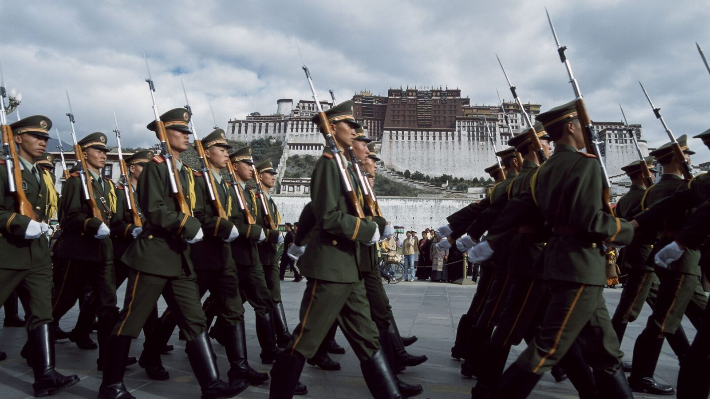
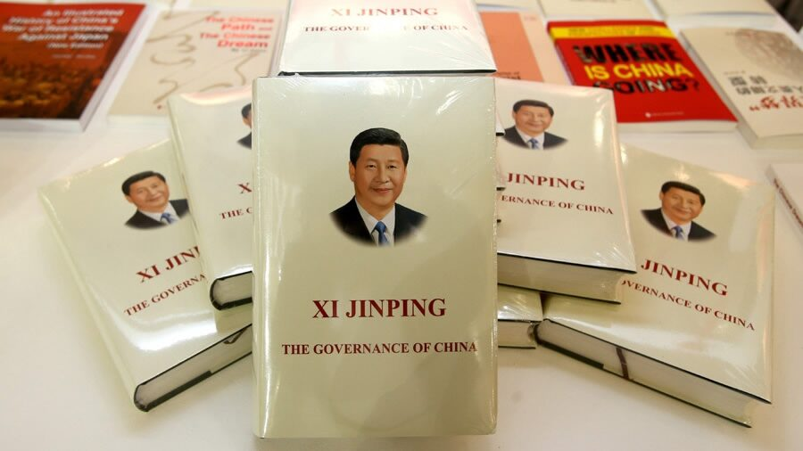
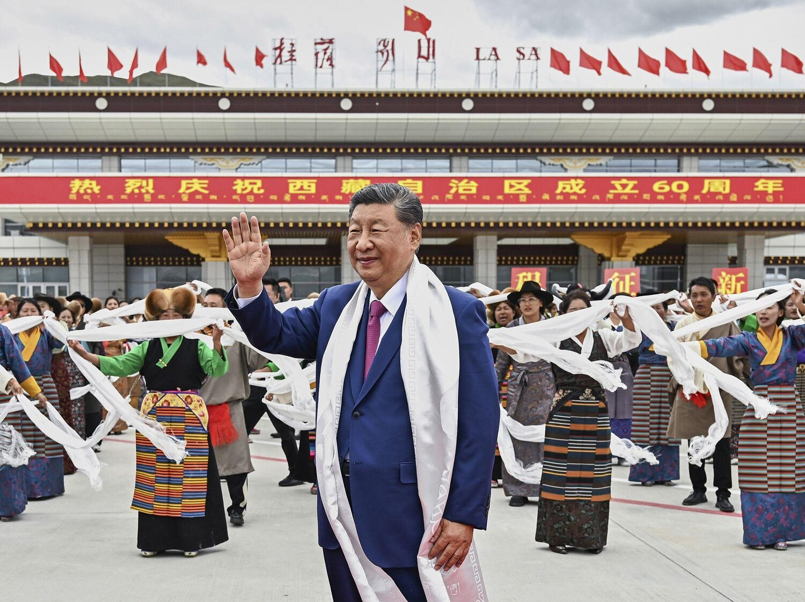

Xi Jinping’s Ten Commandments for Governing Tibet
Ming Xia.

Xi Jinping's Ten Commandments for Governing Tibet
Ming Xia
The Chinese Communist leader Xi Jinping believes he is an epoch-making thinker. Unsurprisingly, being transformative, he has imprinted his signature on socio-economic, political, and geostrategic realms and beyond with the mantra: "East, West, South, North, and the Center; the Party, government, army, civilians, and intellectuals, the Party commands all!"
Xi's strategic guideline for governing Tibet is summarised into ten commandments:
(1) Institutional arrangements: The Communist Party of China (CPC) leadership, socialism, and the autonomous system of nationalities; (2) Strategic thinking: Overall governance prioritises the frontier governance, the latter prioritises stabilizing Tibet; (3) Focal point: The work of Tibet serves the unity of the motherland and the solidarity of nationalities; (4) Guiding principles: Governing Tibet by law and through enriching the people and the land in order to win hearts, and consolidate governance at grassroots in the long run; (5) Worldview: Carefully coordinating the overall situations both at home and abroad; (6) Method and Goal: Improving Tibetans' livelihood to win their hearts; (7) Contact: Intensifying contact and exchange between the Han and Tibetan peoples to achieve assimilation of the latter into the former; (8) Crucial point: Tightening control over religious monasteries and activities to achieve the Sinicization of all religions; (9) Top concern: Insisting on ecological integrity and environmental protection; and (10) Organisational assurance: Strengthening the construction of the Party, especially political loyalty.
——————————————————————————————————————————————————————————————————————————————————————————————————————————————————————————————————————————————————————————————————————————————————————————————————————————————————————————————– # Official "Must" (Guideline) Key Policies Implemented in Tibet (2020–2026) ——– ——————————————————————————————— ————————————————————————————————————————————————————————————————————————————————————————————————————————————————————————————————————————————————————————————————————————————————————————————- 1 Uphold CPC leadership, socialism with Chinese characteristics, and regional ethnic autonomy Mandatory 'Xi Jinping Thought' study sessions in government offices, schools, and monasteries; loyalty pledges required from all cadres and religious personnel; regional autonomy retained in name but fully subordinated to absolute Party control.
2 Strategic thinking: Stabilising Tibet first for border governance Massive construction of "Xiaokang" (well-off) border villages (628 planned, largely completed by 2022), dual-use roads, airports, and military infrastructure along the India border; increased People's Liberation Army (PLA)/ People's Armed Police (PAP) presence and 'stability maintenance' budgets to secure the southwestern gateway.
3 Focus on unification of the motherland and ethnic solidarity Nationwide 'ethnic unity' campaigns and the Law on Promoting Ethnic Unity and Progress; mandatory 'gratitude education' programmes portraying the Party as the sole benefactor; efforts to portray Tibet as inseparable from China.
4 Govern by law, enrich the people, win hearts, and build long-term foundations Codification of Party and government policies into legislation; large-scale poverty alleviation, relocation programmes, and infrastructure (highways, railways) leading to reported gross domestic product (GDP) growth; paired with intensified surveillance, legal controls, and political education embedded in welfare delivery.
5 Coordinate domestic and international situations Tibet policy framed within national security and 'community of shared future for mankind'; diplomatic pushback against international criticism; cutting-off cross-border contacts between Tibetans within China and those in exile; use of the plateau as a strategic rear area amid border tensions with India.
6 Improve livelihood and unite hearts as the starting point and goal of development Significant investment in housing, roads, and services with claims of poverty eradication; through partnership assistance programmes between inland provinces/cities and Tibetan localities to transform dilapidated houses and nomadic lifestyle into settlement; many programmes involve relocation and create dependency on state support, with political indoctrination integrated into daily services.
7 Promote exchanges, interactions, and integration of ethnic groups Expansion of Mandarin-dominant (or Mandarin-only) education; rapid increase in Han migration and cadre transfers; incentives and policies encouraging inter-ethnic interaction and mixed communities.
8 Sinicization of religion and lawful management of religious affairs Revised "Administrative Measures for Religious Activity Venues" (effective September 2023, further tightened in 2024–2025 for Tibetan Buddhist temples) requiring monasteries to uphold CCP leadership and implement Xi Jinping thought; installation of surveillance cameras and Party secretaries inside monasteries; mandatory 'patriotic re-education' for monks and nuns; restrictions on children entering monasteries; systemic defilement of the Dalai Lama becoming more covert but not ending; reinterpretation of Tibetan Buddhism to align with socialist core values.
9 Insist on ecological protection first Official 'ecological civilisation' campaigns and protected-area designations; continued large-scale hydropower dams (including the massive Yarlung Tsangpo/Medog mega-dam project), mining, and infrastructure that critics say undermine genuine environmental protection while serving strategic and energy goals.
10 Strengthen Party building, especially political loyalty Enhanced ideological vetting and training for cadres in Tibet; anti-corruption drives used to enforce political reliability; deeper embedding of Party cells into villages, schools, and monasteries. ——————————————————————————————————————————————————————————————————————————————————————————————————————————————————————————————————————————————————————————————————————————————————————————————————————————————————————————————–
These ten guidelines were formally laid out by Xi Jinping himself at the Seventh Central Tibet Work Forum held in Beijing in late August 2020. Since then, they have been repeated almost verbatim in major official documents, including the 2021 State Council White Paper, "Tibet Since 1951: Liberation, Development and Prosperity", as well as in the Party's theoretical journals. In essence, they constitute the authoritative strategic blueprint for governing Tibet in what the leadership now calls the "new era."
Figure 1:
Xi Jinping's Magnus Opum, the Governance of China

Under the Communist "verbocracy" with Chinese characteristics, we have to learn how to read between the lines/lies. For example, politics always has both explicit and tacit scripts. The Chinese official media has glorified Xi's "personal" attention to and involvement in Tibetan affairs since 1998, when he was still a deputy party secretary in Fujian; it is conspicuous that Tibet is absent from Xi's opus magnum, The Governance of China. The four volumes, covering the period from 2012 to 2022, index Tibet only once in the context of urban-rural ecological protection, which is fewer mentions than those of Leo Tolstoy. Most likely, many substantive matters discussed at their closed-door conferences between party leaders and relevant officials—assessing dire situations and concocting brutal statecraft—are deemed inappropriate for public or global consumption. With this caveat, Xi does not clearly indicate subjects or objects, nor does he use tense (not clear about time framework—it is past, present, or future; if it is the future, how long? etc.) in his grand social engineering. He does not clearly explain the cost-effective calculations for limited capacity and unlimited ambition. Since Xi has a mimetic desire to stand shoulder to shoulder with Mao Zedong, Maoism permeates Xi's strategic thinking, preventing a complete rupture from the Party tradition towards Tibet over the past century. Nevertheless, under the Great United Front Work framework proposed at the Third Plenum of the 20th Party Congress in 2024, Tibet has acquired more importance in Xi's strategic security thinking. This has at least two important implications: First, national self-determination—a rare agreement between Lenin and Woodrow Wilson—cannot be openly rejected by the Chinese communist leader, who draws legitimacy from a Leninist party and aspires to offer China's wisdom to a Human Community of Common Fate. Second, Mao's "plan and manage Tibet" strategy must be appreciated on a larger scale: at home, it offers experiences and a blueprint for Hong Kong and Taiwan; abroad, it serves a long-term national interest, not merely security from neighbouring India or Western hegemonic powers, but probably with an empire-building ambition in the long run. Therefore, on the one hand, we have to see Xi's tightening policies and legislation (e.g., Law of the PRC on Promoting Ethnic Unity and Progress) since 2012 not as an aberration from the Party line; on the other hand, we must see the realpolitik strategy as well as utopian impulse in Xi's programme, inherited from Mao and other leaders.
Figure 2:
Xi Jinping lands in Lhasa, the capital of Tibet and is seen waving on 20th August, 2025

In Chinese political cliché, the Party often warns people of "sugar-coated bomb." We can find both sugar coats and fatal bombs in Xi's package—a fatal attraction. The sugar-coated part lies in his control of guts: feed people better; the fatal part is his control of hearts: through brainwashing to reprogramme Tibetans' minds. During the Cold War era, scientists in the West (i.e., William Sagant, Joost A.M. Meerloo, and others) entered the studies on mind control (or menticide) after they saw widespread use of brainwashing in the Soviet Union and China on their political opponents and foreigners. But after a brief period of research, the scientists abandoned their programme because the cognitive landscape is too complex and sensitive for human engineering without causing unexpected disasters. Now, affective neuroscience has also discovered that through millions of years of biological evolution, humans have developed "the gut-brain axis"—an integrated and organic unity. Commenting on head-transplant surgery conducted by a Chinese scientist, American scientist Leonard Mlodinow (Emotional, 2022, 56) warned, "That the connection of a brain to a body to which it is not accustomed could lead to death, no matter how technically splendid the merger is, is perhaps the greatest sign of the intimacy and importance of the mind-body connection." In this sense, transplanting Communist ideology and core values into the minds of Tibetans threatens their survival as integrated human beings.
Understanding that every gift from Beijing comes with a proviso can guide the Tibetan community in exile in navigating the most difficult predicament. The good news is that the Chinese Communist idealistic and utopian style, particularly under Xi, does deliver material improvements (e.g., poverty relief and infrastructure) in Tibet. The past half-century of economic progress in China made this possible; the advocacy, oversight, and pressure from the Dalai Lama and the Central Tibetan Administration (CTA) in Dharamsala, India, made this progress necessary, although with the Communist ideological hypocrisy. The bad news is, what are we going to do with the menticide under genocide? Fortunately, the strength of Tibetans, especially embodied in the Tibetans-in-exile under the leadership of the Dalai Lama, lies in the rich and expanding resources of mindful philosophy and affective sciences. Therefore, the continuous preservation and innovation of Tibetan Buddhism to contribute to secular ethics, along with Tibetan language and tradition, would offer optimism for preserving the mental and psychological integrity of Tibetans under the brutal techno-totalitarianism. This may also be the affective and spiritual source of hope for Han Chinese living under brainwashing for at least three generations.
Indian sage Sri Ramakrishna once told an allegory of a water snake and a bullfrog mutually tormenting each other: the former has no sword of wisdom to subdue; the latter has no will to surrender. The bullfrog gets stuck in the water snake's throat. This situation applies to the China-Tibet struggle also. As the Communist regime is dealing with a turning point of its economy towards long-term downturn, I hope someday it will be applicable to this relationship, too: the Tibetan monastic community with a sharp sword of wisdom to conquer a mechanically developed but spiritually impoverished China. For the Greater South Asian region, especially for India, Tibet has been and will always be a bridge to help China and India to overcome the geographic, ideological, and cultural barriers as high as the Himalayas. If the well-intentioned Pancasila (Five Principles) can sometime in the future, facilitate a democratic and peaceful Monsoon Asian Union, then a triangular co-opetition (cooperation through competition, competition for cooperation more between China and India, with Tibet as the linchpin) needs to be meticulously pursued as a long-term strategic goal.